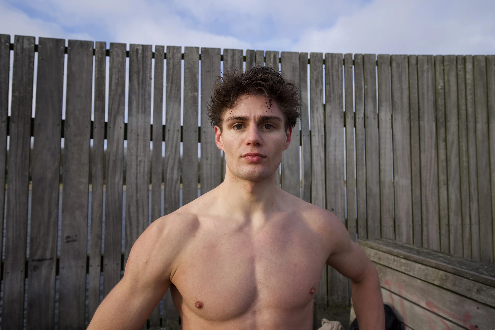
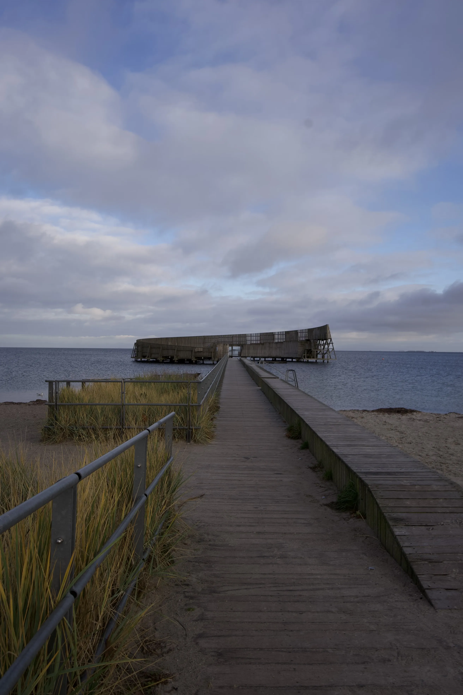
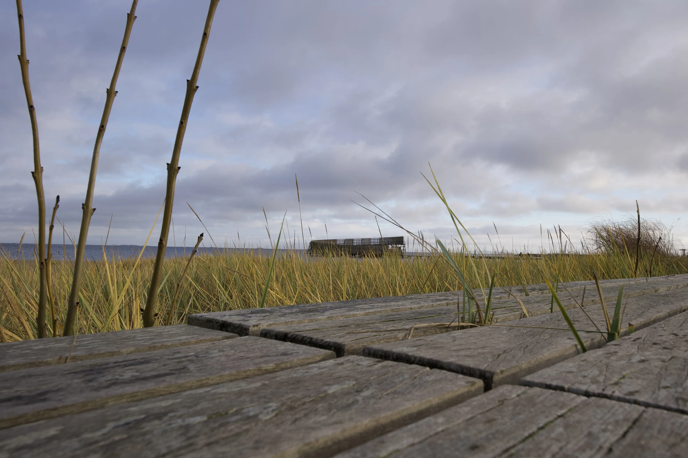
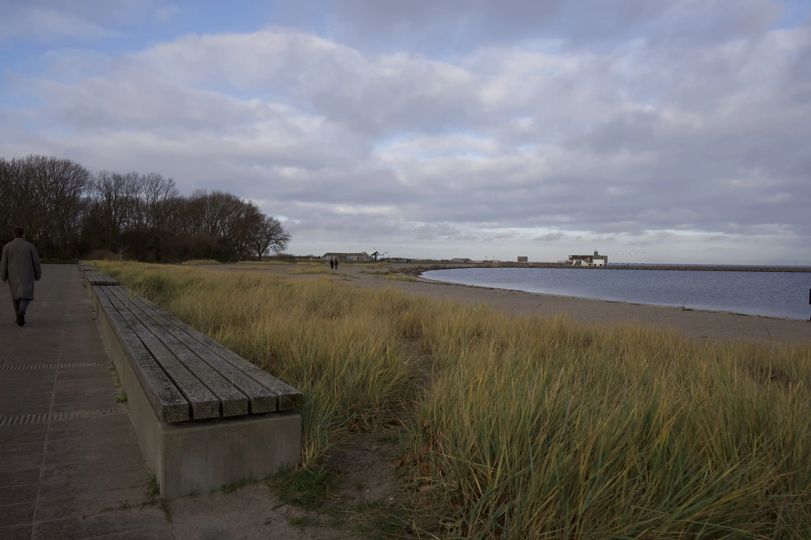

Hunter's passion
Hvorfor vinterbadning?
Hunter DellaGatta har dyrket vinterbadning i flere år. Men hvorfor elsker han at dyppe kroppen i iskoldt vand? Det fortæller han i videoen under.

Hunter foretrækker at vinterbade i Kastrup Søbad


